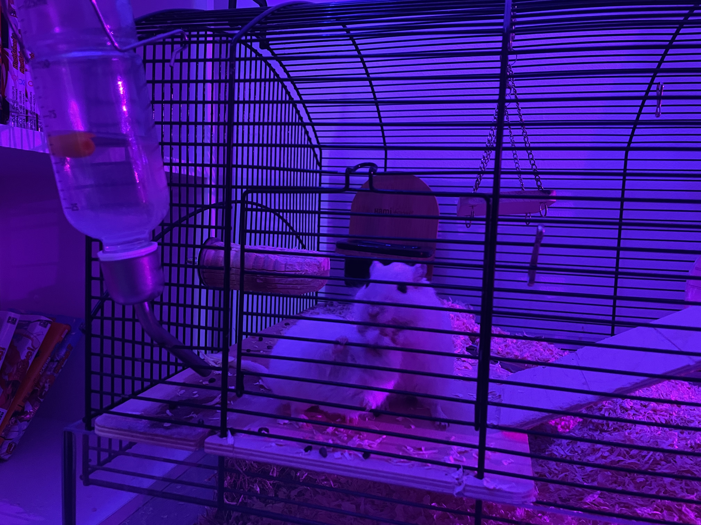
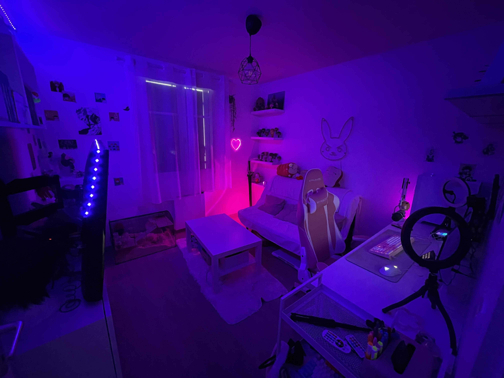
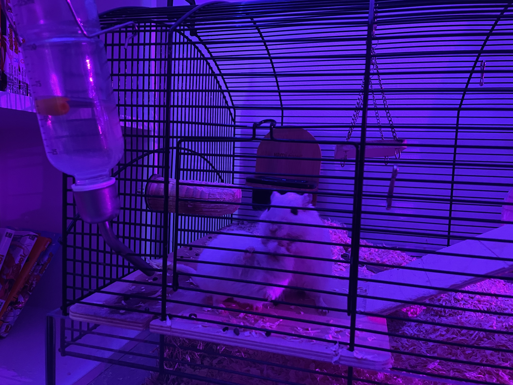
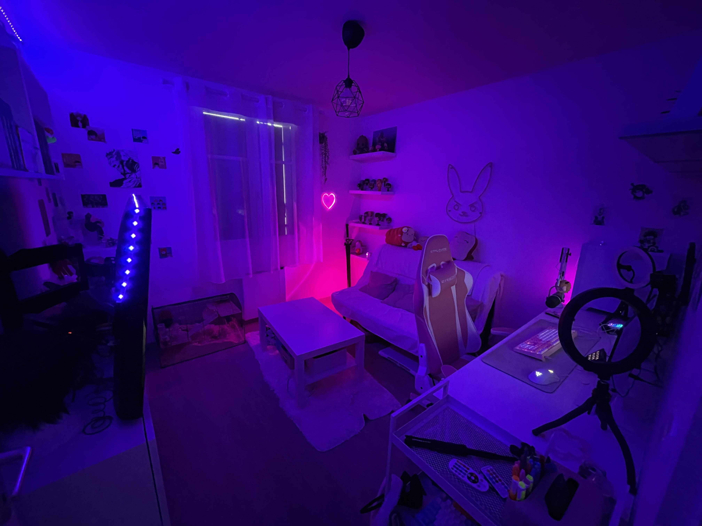

Voix par Balakumar DJEASSITTARME
Chapitre 1
Dans ce premier chapitre, vous aurez une rapide explication de ce qu'est Twitch, ce qu'on y fait et d'autres informations concernant cette plateforme.
Chapitre 2
Dans ce second chapitre, vous aurez une première aperçu de notre streameuse Hey_Raion. Vous y découvrirez une rapide biographie et son parcours depuis ses débuts jusqu'à aujourd'hui.
Chapitre 3
Ce troisième chapitre vous permettra d'avoir une vision du milieu dans lequel évolue Raion à l'aide de photo de son lieu de travail, on y découvrira aussi ses passions et inspirations.
Chapitre 4
Dans ce quatrième et dernier chapitre, vous serez en immersion dans un stream d'Hey_Raion dans lequel elle répondra à plusieurs questions posées par la communauté et vous même.